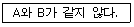

사무자동화산업기사 (2012-09-15 기출문제)
1과목: 사무자동화 시스템
1. 다음 중 사무자동화의 생산성 평가기준 항목들로 적합한 것은?
- 신속성, 확실성, 가치성
- 다양성, 안전성, 연계성
- 가치성, 연계성, 기록성
- 효율성, 유효성, 창조성
(정답률: 59%)

2. 안전이나 법적인 이유로 한 번 기록된 후에는 변경해서는 안 될 자료 즉, 은행이나 중개소의 거래내역 등을 보관하기 위한 것으로 가장 적당한 것은?
- CD-ROM
- WORM 디스크
- 소거 광디스크
- 플로피 디스켓
(정답률: 76%)
3. 사무자동화를 추진하는데 있어 먼저 적용할 특정 부문을 선정하여 사무자동화를 추진해가는 접근 방식은?
- 공통과제형 접근방식
- 계층적 접근방식
- 부분 전개 접근방식
- 업무별 접근방식
(정답률: 69%)
4. 통신판매중개자가 자신의 정보처리시스템을 통하여 처리한 기록 중 대금결제에 관한 기록의 보존 기준은?
- 6월
- 1년
- 3년
- 5년
(정답률: 74%)
5. CATV의 기본적인 구성과 거리가 먼 것은?
- 헤드엔드(Head-End)
- 서비스 분배 전송로
- 가입자 단말기
- 회선 교환 데이터망
(정답률: 48%)
6. 기억장치의 접근속도가 1㎲이고, 데이터 워드가 32비트일 때 대역폭은?
- 8M[bit/sec]
- 16M[bit/sec]
- 32M[bit/sec]
- 64M[bit/sec]
(정답률: 61%)
7. 문자와 그림 정보를 미리 도트 형태로 단말 장치에 전송하는 비디오텍스 방식은?
- 간접 도트 전송 방식
- 알파 모자이크 방식
- 알파 지오메트릭 방식
- 알파 포토그래픽 방식
(정답률: 56%)
8. 다음에서 사무자동화 정의와 관계없는 사람은?
- Michael D.Zisman
- Vincent Lum
- Hammer Sibru
- Wilson magnus
(정답률: 69%)
9. CRT 디스플레이와 비교 시 액정디스플레이(LCD)의 장점으로 거리가 먼 것은?
- 시야각이 넓다.
- 소비 전력이 적다.
- 유해 전자파가 적다.
- 표시판이 얇고 경량이다.
(정답률: 69%)
10. 데이터베이스에서 표현하고자 하는 객체를 나타내는 용어는?
- 속성(Attribute)
- 관계(Relationship)
- 엔티티(Entity)
- 식별기(Identifier)
(정답률: 50%)
11. 하나의 객체 연결 및 포함 맞춤형 컨트롤로, 마이크로 소프트 윈도우에서 수행되는 응용프로그램에서 사용되기 위해 만들어 질 수 있는 특수 목적 프로그램은?
- OCX
- DLL
- SPSS
- OCS
(정답률: 46%)
12. 주기억장치와 CPU의 속도차이를 줄여 처리의 효율을 높이기 위해 사용되는 것으로 기억용량은 적으나 속도가 매우 빠른 것은?
- ROM
- HDD
- Cache
- Channel
(정답률: 85%)
13. 컴퓨터 통신망의 표준화를 추진하는 과정에서 개발된, 일련의 LAN 접속 방법 및 프로토콜 표준들을 지칭하는 것과 관련 있는 것은?
- IEEE 802
- IEEE 1394
- IEEE 754
- ANSI
(정답률: 58%)
14. IP주소 할당 방법의 하나로 한정된 IP주소의 낭비를 방지하고 라우터의 처리 부하를 경감시킬 목적으로 개발된 것은?
- CIDR
- IPv6
- DNS서버
- 라우터
(정답률: 36%)
15. MPEG 표준 중 비디오 표준 분류를 위한 것은?
- MPEG-A
- MPEG-B
- MPEG-C
- MPEG-D
(정답률: 48%)
16. 다음 중 문서이미지 관리시스템을 기반으로 발전된 그룹웨어는?
- 전자우편 메시징
- 워크플로우
- 전자회의
- 커뮤니케이션
(정답률: 70%)
17. 사무자동화 도입단계 중 가장 먼저 추진되어야 할 것은?
- 목표와 방침 설정
- 추진체제의 확립
- 업무의 분석
- 업무개선과 기기의 도입
(정답률: 57%)
18. 사무자동화 기기의 선정, 도입시 고려할 사항과 가장 거리가 먼 것은?
- 워드프로세서, 퍼스널 컴퓨터 등의 기기를 최우선적으로 도입
- 가격이 저렴하고 효과가 큰 기기부터 도입
- 기기사용에 대한 두려움과 부담감을 주지 않는 기기의 선정
- 업무의 가시적 효과를 크게 주는 기기의 선정
(정답률: 61%)
19. 인터넷을 통한 전자상거래(EC)의 효과로 옳지 않은 것은?
- 잠재고객의 확보와 물리적 제약 극복
- 소비자의 다양한 정보와 선택의 다양화
- 완벽한 기밀성과 익명성의 보장
- 구매자의 비용절감
(정답률: 65%)
20. 전자상거래 암호화 기법 중 DES에 관한 설명으로 옳은 것은?
- 대한민국에서 개발한 블록 암호 방식이다.
- 평문을 64비트로 나눠 56비트의 키를 이용한다.
- 키의 크기로 128, 160, 192, 224 등 128비트 이상의 모든 32의 배수 비트를 사용할 수 있다.
- 공개키와 개인키를 세트로 만들어 암호화하는 방식이다.
(정답률: 46%)
2과목: 사무경영관리 개론
21. 과학적 사무관리의 목표로 가장 거리가 먼 것은?
- 인원의 감축
- 생산성 중대
- 사무작업의 능률 향상
- 사무비용의 절감
(정답률: 85%)
22. 사무작업에 관한 설명으로 옳은 것은?
- 사무작업시 감독자는 전방에 위치하여 감독하되 사무원은 동일 방향으로 배치한다.
- 사무실에서 직선적 배치는 작업경로 단순화 및 처리시간의 단축을 가져 온다.
- 건물의 구입은 장래 예측을 위해 준비하는 것보다는 현재의 요구에 충실해야 한다.
- 사무실 배치에는 채광, 소음, 난방 등을 고려하고 전기 배선이나 수도 관리선 등은 고려하지 않는다.
(정답률: 55%)
23. 사무작업의 표준시간에 관한 설명으로 가장 적합한 것은?
- 가장 빨리 일할 수 있는 작업시간
- 정규 작업시간에 여유시간을 더한 것
- 최대시간으로 최대의 효과를 내는 시간
- 종업원의 작업 능력에 따른 평균시간
(정답률: 59%)
24. EDI에 대한 설명 중 가장 옳은 것은?
- EDI는 주로 일반소비자와의 거래에 이용된다.
- 송신측에서는 문서발송 비용이 증가된다.
- EDI는 거래서식을 표준양식에 맞추어 거래하는 방식이다.
- 수신측에서는 문서 재입력 비용이 증가된다.
(정답률: 67%)
25. 업무관리시스템의 구성 및 운영시 문서관리카드에 포함되지 않아도 되는 것은?
- 기안 내용
- 의사 결정 과정에서 제기된 의견
- 의사 결정시 참석자
- 의사 결정 내용
(정답률: 52%)
26. 사무관리의 기능에 해당되지 않는 것은?
- 연결기능(결합기능)
- 설계기능
- 관리기능(보조기능)
- 정보기능
(정답률: 78%)
27. 문서정리 보존의 일반 원칙과 관계없는 것은?
- 보존할 문서는 가능한 한 줄인다.
- 규정에 의거 보존문서의 정리 및 폐기를 자주 한다.
- 문서보존규정을 제정하고 이를 준수한다.
- 훼손되어 활용이 불가능한 문서도 영구보존해야 한다.
(정답률: 87%)
28. 암호화 등의 문서 발신방법을 지정한 경우의 조치로 옳은 것은?
- 문서 두문의 마지막에 “암호” 등으로 발신할 방법을 표시
- 문서 본문의 마지막에 “암호” 등으로 발신할 방법을 표시
- 문서 두문의 시작에 “암호” 등으로 발신할 방법을 표시
- 문서 본문의 시작에 “암호” 등으로 발신할 방법을 표시
(정답률: 49%)
29. 사무관리자의 역할과 가장 거리가 먼 것은?
- 사무관리 조직
- 사무작업 계획
- 사무작업 통제
- 사무작업 연결
(정답률: 67%)
30. 공동저작물의 저작재산권을 행사할 수 있는 경우는?
- 저작재산권자 일부의 합의
- 저작재산권자 전원의 합의
- 저작재산권자 1/3의 합의
- 저작재산권자 2/3의 합의
(정답률: 65%)
31. 사무계획의 필요성에 해당되지 않는 것은?
- 목표의 설정
- 예산의 효과적 사용
- 최신의 사무기기 사용
- 사무의 우선순위 결정
(정답률: 68%)
32. 사무의 기능별 사무분류 중 경영자나 간부직원이 담당하는 결제, 관리자나 관리스탭이 수행하는 계획, 입안, 견적, 통제, 조사, 감사 등과 같이 전문적인 지식 및 경험을 요구하는 사무를 무엇이라 하는가?
- 판단사무
- 작업사무
- 서기사무
- 잡무
(정답률: 71%)
33. 사무조직의 형태 중 라인조직의 장점이 아닌 것은?
- 전문화의 결여
- 단순하고 이해하기 쉬움
- 결정과 집행의 신속
- 책임소재의 명확
(정답률: 67%)
34. 사무조직을 계획하는데 있어서 사무작업 분산화의 장점으로 옳지 않은 것은?
- 사무작업자의 사기 저하를 방지 할 수 있다.
- 비밀을 요하는 사무작업을 독립된 부서에서 처리 가능하다.
- 작업시간, 거리, 운반 등의 간격을 줄일 수 있다.
- 사무작업자의 지휘 감독을 원활하게 할 수 있다.
(정답률: 63%)
35. 전자문서에 의한 통지 등을 하기 위해 필요한 사항을 정할 때 반영하지 않아도 되는 것은?
- 국회 규칙
- 대법원 규칙
- 헌법재판소 규칙
- 국무회의 규칙
(정답률: 75%)
36. 문서의 내용을 둘 이상의 항목으로 구분할 필요가 있는 때에 첫째항목(가장 상위항목)의 구분으로 옳은 것은?
- 1., 2., 3., 4., ... 로 나누어 표시한다.
- 가., 나., 다., 라., ... 로 나누어 표시한다.
- 1), 2), 3), 4) ... 로 나누어 표시한다.
- (1), (2), (3), (4) ... 로 나누어 표시한다.
(정답률: 63%)
37. 사업주가 근로자의 안전한 통행을 위해 통로에 시설해야 하는 조명 기준은?
- 50럭스 이상의 조명
- 75럭스 이상의 조명
- 90럭스 이상의 조명
- 150럭스 이상의 조명
(정답률: 63%)
38. 사무개선의 목표와 가장 거리가 먼 것은?
- 용이성
- 신속성
- 다양성
- 경제성
(정답률: 57%)
39. 사무환경에서 주위의 색채 조절에 대한 설명 중 가장 옳지 않은 것은?
- 색채는 운동성을 지니고 있으며 붉은색은 침체감과 소외감을 느끼게 한다.
- 색채는 온도 감각을 지니고 있으며 붉은색은 따뜻한 느낌을 주고 청색은 차가운 느낌을 준다.
- 사무기구의 색채 차이가 큰 경우 오래 바라볼 때 피로감을 준다.
- 색채는 대조적인 색깔과 비교될 때 더 잘 나타난다.
(정답률: 67%)
40. 제품의 설계, 생산에서부터 폐기까지의 모든 과정 (광속상거래)에 정보통신 기반을 활용하여 다양한 형태의 기술 및 거래 자료를 교환하고 공유하는 조직간 업무처리 방식은?
- EC
- EDIFACT
- CALS
(정답률: 70%)
3과목: 프로그래밍 일반
41. C 언어의 관계연산자를 사용하여 다음 내용을 옳게 나타낸 것은?

- A ~= B
- A #= B
- A /= B
- A != B
(정답률: 83%)
42. C 언어에서 사용하는 이스케이프 시퀀스에 대한 의미가 옳지 않은 것은?
- \r : carriage return
- \t : tab
- \n : new title
- \b : backspace
(정답률: 63%)
43. 주기억장치 배치 전략 중 입력된 프로그램을 수용할 수 있는 공간 중 가장 큰 공백에 할당하는 전략은?
- Large-Fit
- Worst-Fit
- Best-Fit
- First-Fit
(정답률: 61%)
44. C언어의 특징으로 옳지 않은 것은?
- 포인터에 의한 번지 연산 등 다양한 연산 기능을 가진다.
- 기호 코드(Mnemonic Code)라고도 한다.
- UNIX 운영체제를 구성하는 시스템 프로그램이다.
- 이식성이 뛰어나 컴퓨터 기종에 관계없이 프로그램을 작성할 수 있다.
(정답률: 57%)
45. 컴파일 과정 중 원시 프로그램을 하나의 긴 스트링으로 보고 원시 프로그램을 문자 단위로 스캐닝하여 문법적으로 의미 있는 일련의 문자(토큰)들로 분할해 내는 작업은?
- 구문분석
- 원시분석
- 선행처리
- 어휘분석
(정답률: 66%)
46. 객체지향언어(Object Oriented Programming Language)에서 하나 이상의 유사한 객체(Object)들을 묶어서 하나의 공통된 특성으로 표현한 것을 무엇이라 하는가?
- 추상화
- 객체
- 메시지
- 클래스
(정답률: 87%)
47. 시간 구역성의 예가 아닌 것은?
- 순환(looping)
- 배열 순회(array traversal)
- 부프로그램(subprogram)
- 집계(totaling)
(정답률: 50%)
48. UNIX 운영체제에서 커널(Kennel)에 대한 설명으로 옳지 않은 것은?
- UNIX의 가장 핵심적인 부분이다.
- 프로세스 관리, 기억장치 관리 등의 기능을 수행한다.
- 하드웨어를 보호하고 프로그램과 하드웨어 간의 인터페이스 역할을 담당한다.
- 사용자의 명령어를 인식하여 프로그램을 호출하고 명령을 수행하는 명령어 해석기이다.
(정답률: 65%)
49. 목적(Object) 프로그램에 대한 설명으로 옳은 것은?
- 기계어로 번역된 프로그램
- 기계어로 번역할 수 있는 프로그램
- 기계어로 번역되기 전의 프로그램
- 기계어를 원시 코드로 바꾸는 프로그램
(정답률: 51%)
50. 번역된 프로그램의 실행 오류를 찾기 위한 프로그램은 무엇인가?
- Debugger
- Operating system
- Spread sheet program
- Linkage Editor
(정답률: 88%)
51. 부프로그램(subprogram) 사용의 특징에 해당하지 않는 것은?
- 시스템 설계시 효율적이다.
- 가독성 및 유지, 보수가 편리하다.
- 프로그램이 커지므로 기억장소를 많이 필요하게 된다.
- 프로그래머는 동일한 프로그램을 한번만 작성해서 필요시 호출하여 사용이 가능하다.
(정답률: 62%)
52. 이항 연산자 연산에 해당하지 않는 것은?
- AND
- XOR
- OR
- NOT
(정답률: 84%)
53. C 언어의 함수 중 한 문자 입력 함수는?
- getchar( )
- gets( )
- puts( )
- putchar( )
(정답률: 47%)
54. 작성된 표현식이 BNF의 정의에 의해 바르게 작성되었는지 확인하기 위해 만든 트리는?
- 어휘 트리
- 파스 트리
- 규정 트리
- 개발 트리
(정답률: 89%)
55. 운영체제의 성능 평가 항목으로 거리가 먼 것은?
- 처리 능력
- 반환 시간
- 비용
- 사용 가능도
(정답률: 69%)
56. 다음 중 프로그램 수행 순서의 단계가 옳은 것은?
- 목적 프로그램→링커→원시 프로그램→컴파일러→로더→실행
- 원시 프로그램→컴파일러→목적 프로그램→링커→로더→실행
- 목적 프로그램→컴파일러→원시 프로그램→링커→로더→실행
- 원시 프로그램→링커→컴파일러→목적 프로그램→로더→실행
(정답률: 67%)
57. 예약어(Reserved Word)에 대한 설명으로 옳지 않은 것은?
- 새로운 언어일수록 예약어의 수가 적어진다.
- 예약어는 변수 명으로 사용될 수 없다.
- 예약어는 오류 회복에 도움을 준다.
- 예약어는 컴파일 속도를 향상시킨다.
(정답률: 56%)
58. C언어에서 저장 클래스를 명시하지 않은 변수는 기본적으로 어떤 변수로 간주하는가?
- AUTO
- REGISTER
- STATIC
- EXTERN
(정답률: 59%)
59. BNF 심볼 중 택일을 의미하는 것은?
- ::=
- < >
- │
- #
(정답률: 87%)
60. C언어의 do ~ while 문에 대한 설명 중 틀린 것은?
- 문의 조건이 거짓인 동안 루프처리를 반복한다.
- 문의 조건이 처음부터 거짓일 때도 문을 최소 한번은 실행한다.
- 무조건 한 번은 실행하고 경우에 따라서는 여러 번 실행하는 처리에 사용하면 유용하다.
- 문의 맨 마지막에 “;" 이 필요하다.
(정답률: 70%)
4과목: 정보통신 개론
61. 전진오류 수정방식(FEC)에 관한 설명으로 옳은 것은?
- 정확한 문장을 수신하면 ACK를 보낸다.
- 오류율의 특성을 전혀 모를 때에는 신뢰도가 높다.
- 추가되는 비트수가 적으므로 경제적이다.
- 연속적인 데이터 전송이 가능하다.
(정답률: 47%)
62. 프로토콜의 기본 구성요소가 아닌 것은?
- 인터페이스(interface)
- 구문(syntax)
- 의미(semantics)
- 타이밍(timing)
(정답률: 55%)
63. 프로토콜의 특성에 해당하지 않는 것은?
- 프로토콜은 회선 연결이 직접 또는 간접일 수 있다.
- 프로토콜은 표준 또는 비표준 일 수 있다.
- 프로토콜은 대칭적 또는 비대칭적 일 수 있다.
- 프로토콜은 다중적 또는 집중적 일 수 있다.
(정답률: 55%)
64. 데이터 프레임을 연속적으로 전송해 나가다가 NAK를 수신하게 되면 오류가 발생한 프레임 이후에 전송된 모든 데이터 프레임을 재전송하는 오류제어 방식은?
- Go-back-N ARQ
- Selective-Repeat ARQ
- Stop-and-Wait ARQ
- Forward Error Connection
(정답률: 58%)
65. HDLC 프레임의 헤더에서 프레임을 송수신하는 스테이션을 구별하기 위해 사용되는 스테이션 식별자 필드는?
- 주소 필드
- 프레임 검사 순서
- 정보 필드
- 플래그
(정답률: 55%)
66. 아날로그 데이터를 전송하기 위해 디지털 형태로 변환하고 또 이러한 디지털 형태를 원래의 아날로그 데이터로 복구시키는 것은?
- CCU
- DSU
- CODEC
- DTE
(정답률: 69%)
67. 아날로그 데이터를 디지털 신호로 변환하는 PCM(Pulse Code Modulation)방식의 진행순서를 바르게 나타낸 것은?
- 표본화→부호화→양자화→여과→복호화
- 표본화→양자화→부호화→복호화→여과
- 표본화→부호화→양자화→복호화→여과
- 표본화→양자화→여과→부호화→복호화
(정답률: 81%)
68. 디지털 데이터를 아날로그 신호로 변환하는 방식이 아닌 것은?
- ASK
- FSK
- DSK
- PSK
(정답률: 53%)
69. 다음 중 광대역 통신망 ATM 셀(Cell)의 구성으로 옳은 것은?
- 헤더 5옥테드(octet)와 페이로드(Payload) 53옥테드
- 헤더 4옥테드(octet)와 페이로드(Payload) 53옥테드
- 헤더 5옥테드(octet)와 페이로드(Payload) 48옥테드
- 헤더 4옥테드(octet)와 페이로드(Payload) 48옥테드
(정답률: 60%)
70. 샤논(shannon)의 정리 중 통신로용량에 대한 설명으로 옳지 않은 것은?
- 통신로용량(C)은 대역폭(W)에 비례한다.
- 통신로용량(C)은 신호 대 잡음비(S/N)가 높을수록 증가한다.
- 통신로용량(C)은 신호 전력(S)이 클수록 많아진다.
- 통신로용량(C)은 잡음전력(N)과는 관계없다.
(정답률: 75%)
71. 패킷교환 방식의 특징이 아닌 것은?
- 통신 장애 발생 시 대체 경로 선택이 가능하다.
- 패킷형태로 만들어진 데이터를 패킷교환기가 목적지 주소에 따라 통신경로를 선택해주는 방식이다.
- 프로토콜 변환이 가능하고 디지털 전송방식에 사용된다.
- 데이터 전송 단위는 메시지이고, 교환기가 호출자의 메시지를 받아 축적한 후 피 호출자에게 보내주는 방식이다.
(정답률: 53%)
72. 주파수 분할 다중(FDM)방식에서 신호들이 전기적 중복 현상을 예방하기 위해서 인접하는 서브채널(sub-channel)들 사이에 위치하는 것은?
- 터미널(terminal)
- 대역폭(frequency band)
- 경계대역(guard band)
- 폴링 소프트웨어(polling software)
(정답률: 57%)
73. IGMP(Internet Group Management Protocol)에 대한 설명으로 틀린 것은?
- 멀티캐스트 통신방식에서 멀티캐스트 그룹에 참여하고 정보를 전송하기 위해 사용되는 프로토콜이다.
- ICMP와 유사하다.
- IGMP는 RFC 1122로 정의 된다.
- 멀티캐스팅을 제공하는 인터넷 라우터와 호스트에 사용된다.
(정답률: 51%)
74. 나이퀴스트(Nyquist) Sampling Theorem과 관련이 있는 것은?
- 표본화
- 양자화
- 부호화
- 복호화
(정답률: 54%)
75. ITU-T 권고안의 X 시리즈에서 패킷형 DTE와 DCE 간의 인터페이스는?
- X.21
- X.22
- X.24
- X.25
(정답률: 72%)
76. OSI 7계층 중 데이터 링크 계층에 대한 설명으로 틀린 것은?
- 프레임 단위의 전송을 규정
- 하위 제 2계층에 해당
- 통신망의 접속, 다중화 등에 관한 기능
- 전송 데이터의 흐름제어 및 오류제어
(정답률: 37%)
77. 정보통신에 관한 설명으로 틀린 것은?
- IBM의 SNA는 컴퓨터 간 접속을 용이하게 체계화된 네트워크 방식이다.
- 본격적인 데이터통신의 시초는 미국의 반자동 방공 시스템(SAGE)이다.
- 온라인시스템의 대량보급으로 정보통신을 위한 표준화의 필요성이 줄어들었다.
- 데이터전송은 컴퓨터에 의해 처리된 정보의 전송이라 할 수 있다.
(정답률: 62%)
78. 역 다중화기(Inverse Multiplexer)에 관한 설명으로 틀린 것은?
- 두 개의 음성 대역폭을 이용하여 광대역 통신 속도를 얻을 수 있는 장치이다.
- 하나의 채널이 고장 나면 나머지 하나의 채널로 계속 운영이 가능하다.
- 상이한 두 개 채널 간 지연으로 인한 비트 스트림 혼란을 조정하기 위해 순환 기억장치가 필요하다.
- 입출력 대역폭이 다르며, 구조가 복잡하면서 불규칙한 전송에 사용된다.
(정답률: 59%)
79. 통화 중에 이동전화가 한 셀에서 다른 셀로 이동할 때 자동으로 다른 셀의 통화 채널로 전환해 줌으로써 통화가 지속되게 하는 기능은?
- 핸드오프
- 핸드쉐이크
- 셀의 분할
- 페이딩
(정답률: 77%)
80. 프로토콜 전송방식 중 특정한 플래그를 메시지의 처음과 끝에 포함시켜 전송하는 방식은?
- 비트 방식
- 문자 방식
- 바이트 방식
- 워드 방식
(정답률: 64%)
- 효율성: 사무자동화는 업무를 더욱 빠르고 정확하게 처리할 수 있도록 도와줍니다. 따라서 사무자동화의 생산성 평가에서는 효율성이 중요한 평가기준이 됩니다.
- 유효성: 사무자동화가 제공하는 기능이 실제로 업무에 유효하게 활용될 수 있는지를 평가하는 것도 중요합니다. 이를 평가하는 항목으로 유효성이 있습니다.
- 창조성: 사무자동화는 업무를 자동화함으로써 업무의 효율성을 높이는 것뿐만 아니라, 새로운 아이디어나 창의적인 해결책을 제시할 수도 있습니다. 따라서 사무자동화의 생산성 평가에서는 창조성도 중요한 평가기준이 됩니다.